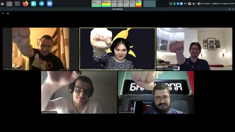

Если сегодняшним вечером вам решительно нечем себя занять, приглашаю вас на встречу подписчиков. 16.07 с 21:00 до 23:00 жду вас в зуме - https://yandex.zoom.us/j/94335448816?pwd=naJznv9AsqeOXHkw8b34EdyzZUnwpJ.1
Серьезные обсуждения новейших моделей, харнесс-инжиниринга, мультимодального ИИ, оркестрации агентов - всего этого не будет.
Будем пить чай, болтать про жизнь, тачки, путешествия, но и немного про современную разработку и архитектуру.
Отвечу на любые ваши вопросы (но не факт, что честно), поделюсь парой интересных рецептов "чая".
На иллюстрации, если что, реальный скрин зум-посиделок с коллегами из ковидного 2020. Даже в темные времена важно оставаться на связи с близкими, благо технологии позволяют.
